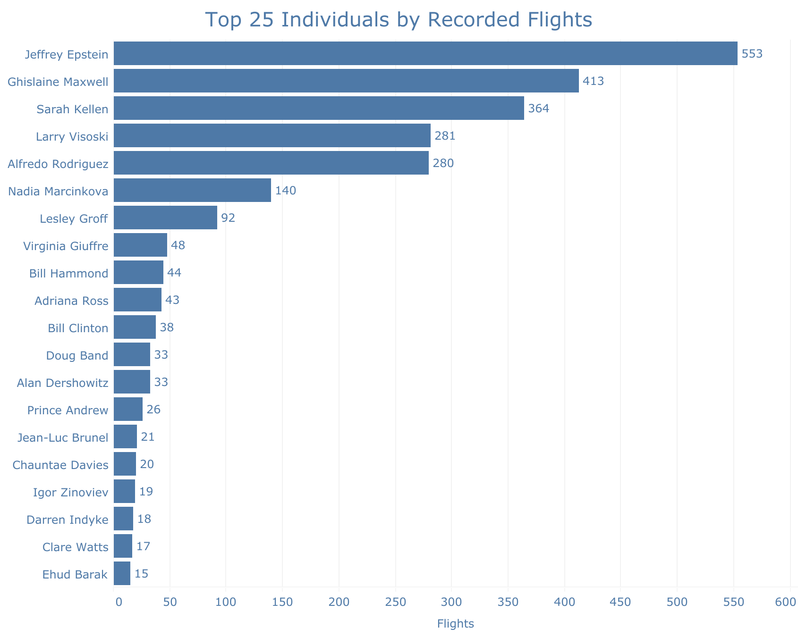
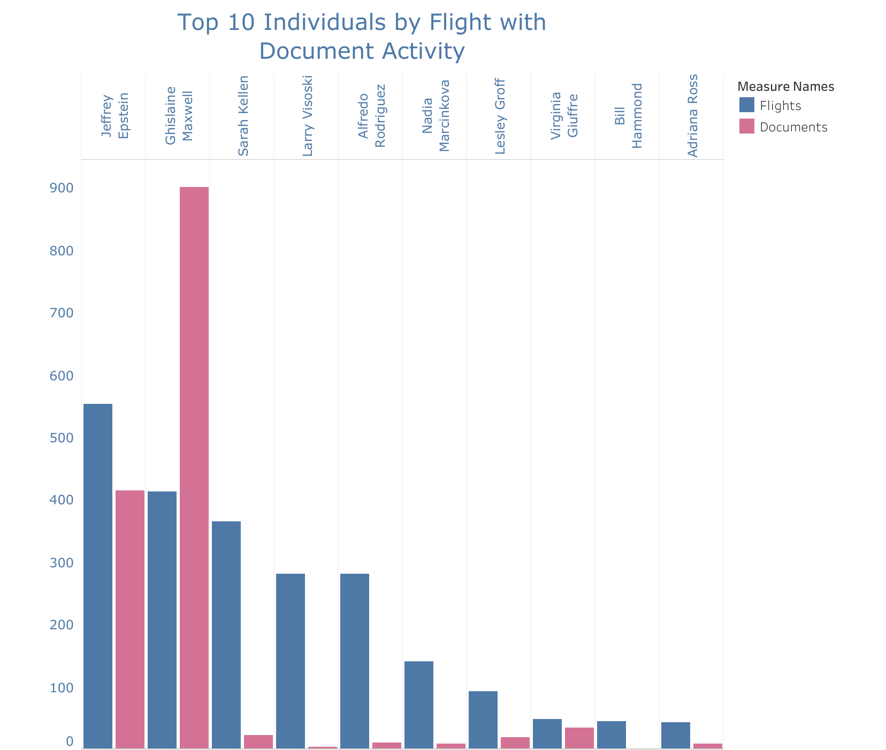
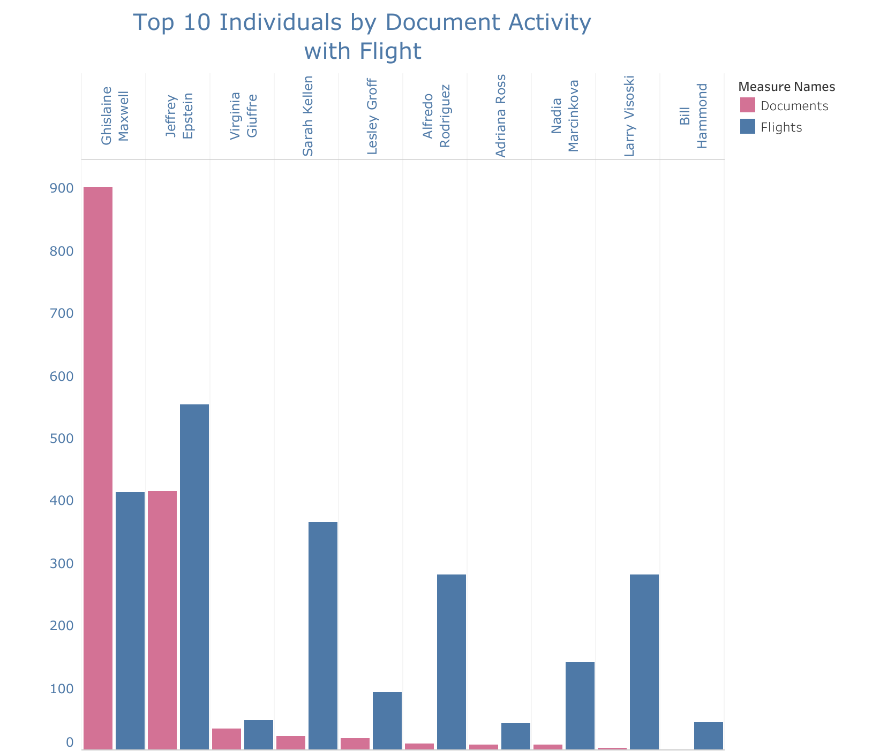

Lab Overview
For Lab 4, I used Tableau Public to look at a dataset connected to the Epstein files. I chose this dataset because it has been talked about a lot recently, and I thought it would be interesting to look at it from a data perspective instead of only thinking about it through headlines or media coverage.
My visualization compares Flights and Documents. I wanted to see if the people who appeared most often in flight records were also the people who appeared most often in document mentions. I also created screenshots of my Tableau views so the work is still visible even if the embedded Tableau chart does not load right away.
I want to be clear that this visualization only shows patterns in the dataset. It does not prove guilt, responsibility, or wrongdoing. It only shows recorded activity and mention frequency from the data I used.
Tableau Visualization
Below is my Tableau Public visualization. I used side-by-side rankings to compare the top individuals by Flights and Documents.

Tableau Visualization Screenshots
I included screenshots of my Tableau views so the main parts of my analysis are easy to see. These views show recorded flights, the top 10 individuals by flight activity, and the top 10 individuals by document activity.



Reflection and Analysis
Data Preparation
I chose the Epstein files dataset because it felt timely and relevant. It has been in the news and discussed so much, so I thought it would be interesting to look at the data itself and see what patterns showed up visually. I did not want to approach it from a gossip or media angle. I wanted to look at what the dataset showed and what it did not show.
I did not run into any major errors when I uploaded the dataset into Tableau Public. The file was already organized pretty well, which made the process easier. The column names were clear, and Tableau recognized the numeric fields, like Flights and Documents, as measures. I still had to review the fields and make sure Tableau was reading them the way I expected, but I did not have to do a lot of cleaning before building the visualization.
The dataset had enough information to make a useful comparison between flight frequency and document mentions. If I had more time, I would want to bring in more context, like dates, locations, or timeline information. For this lab, though, the data was enough to show clear patterns and some interesting differences between the two measures.
Design Choices
My main goal was to make the visualization easy to read. This dataset could get overwhelming quickly if too many names were shown at once, so I focused on the top 10 individuals and a few clear Tableau views. That helped keep the dashboard cleaner and made the comparison easier to understand.
I used two main metrics: Flights and Documents. Flights show recorded travel frequency, and Documents show how often a person appeared in the released legal materials. I used Name as the main dimension because I wanted to compare individuals directly.
I created separate views so I could look at the data in more than one way. One view shows recorded flights, one ranks the top 10 individuals by Flights, and one ranks the top 10 individuals by Documents. I liked this setup because it helped me see how the story changed depending on the metric. I used side-by-side bars instead of stacking everything because stacked bars made the comparison harder to read.
Expected Patterns
Before making the visualization, I expected Flights and Documents to have a strong connection. My first thought was that people who appeared frequently in flight records would probably also appear frequently in document mentions. I also expected the most central figures in the case to show up near the top of both charts.
The visualization confirmed part of that expectation. A small group of names clearly appears at the top, and there is a steep drop after the first few names. That part did not surprise me. With a dataset like this, I expected the activity to be concentrated around a smaller group of people instead of being evenly spread across everyone.
What was more interesting was that the two rankings did not line up perfectly. Some names appeared more strongly in Flights, while others stood out more in Documents. Seeing the charts next to each other made that difference much easier to notice.
Surprises and Outliers
It was not surprising that Epstein ranked highest in Flights, but the size of the difference was more dramatic than I expected. The drop-off after the top names was very clear. To me, the outlier was not just who ranked first, but how quickly the rest of the chart dropped after the top tier.
The most interesting surprise was Maxwell in the Documents ranking. Her document mentions were much higher compared to her flight count. She did not lead in Flights, but she stood out strongly in Documents. That showed me that document visibility and travel frequency are not the same thing.
I also noticed that some individuals ranked higher in Flights but had much lower document mentions. That was not what I expected. I thought high flight frequency would connect more closely with high document frequency, but the visualization showed that these two measures are telling different parts of the story.
This is also why context matters so much. Flights and Documents do not automatically mean guilt or involvement. They are counts from the dataset. The chart shows patterns, but it does not explain the full meaning behind those patterns.
Questions for Further Investigation
This visualization made me want to ask more questions. What exactly counts as a document mention? Are some people mentioned over and over in long filings or depositions? Could that make their document count look much higher than someone else’s?
I would also want to know why some people have high flight counts but low document mentions. Were they connected to the flight records but not discussed as much in legal documents? Were document mentions influenced by legal strategy, media attention, or the way the files were released?
Another question I would want to explore is whether the pattern changes over time. If I added a timeline, would the same names stay at the top, or would the ranking shift during different years or phases of the case? That would help explain whether the concentration is steady or tied to certain periods.
Tool Evaluation
Tableau Public worked well for this assignment because it made it easy to sort, filter, and compare the data. The Top 10 filter was especially helpful because it let me narrow the view without manually deleting rows from the dataset. The dashboard view also made it easier to compare Flights and Documents in one place.
Compared to Excel, Tableau made the ranking and dashboard feel more polished and interactive. In Excel, I could make charts, but I would have had to adjust more things manually. Compared to Canva, Tableau is much better for working with actual data. Canva is great for design, but it does not handle filtering and data exploration the same way.
The part I found harder was formatting. Adjusting spacing, labels, gridlines, and the overall look took more time than I expected. Extreme outliers also made the chart harder to balance because large values can compress everything else. That is one reason I limited the view to the top 10.
Overall, I think Tableau Public is useful for finding patterns and building dashboards, but it does not explain the data for you. It can show what stands out, but the person making the visualization still has to interpret the results carefully and responsibly.
Conclusion
This lab helped me see how a visualization can make a dataset easier to understand. Looking at the spreadsheet alone, the names and numbers can start to run together. In Tableau, the patterns became much easier to see.
The biggest takeaway for me is that a visualization can show where something stands out, but it does not automatically explain why. My dashboard helped me compare Flights and Documents, but it also raised more questions about what those counts mean and what context would be needed to understand them fully.